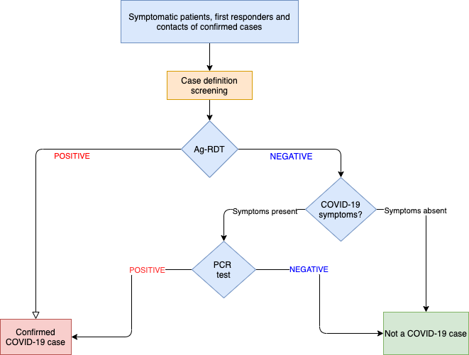

Chapter 7 Frequently Asked Questions
This chapter lists examples that can be asked by participants during the training.
7.1 Definitions
Q: What is the difference between SARS-CoV-2 and COVID-19?
A: SARS-CoV-2 is the abbreviation for SARS coronavirus and the cause of severe acute respiratory distress syndrome.
COVID-19 stand for COrona VIrus Disease 2019. It is a contagious viral disease caused by SARS-CoV-2.
Q: What is the difference between PCR, RT-PCR and LAMP-PCR?
A: - PCR is the abbreviation for Polymerase Chain Reaction. It is a technique to multiply a small piece of DNA to an extend that it can be detected.
- RT-PCR stands for Reverse Transcription PCR. An additional reaction step is added prior to the PCR step, where RNA is first transcripted into DNA. Hepatitis B virus is a ‘DNA-virus’ and can be detected directly with PCR. SARS-CoV-2 is an ‘RNA-virus’ and needs RT-PCR for detection.
- LAMP stands for Loop-mediated isothermal amplification reaction. It is a single-tube technique for the amplification of DNA. It can be combined with the reverse transcription step as a low-cost alternative to detect SARS-CoV-2.
7.2 Algorithm
Q: What is the testing algorithm for diagnosing COVID-19?
A: The testing algorithm depends on the setting and available resources. For example, in a setting with limited access to PCR-testing, the testing algorithm can be described as in the scheme below:

Q: What if the testing outcome is negative, but SARS-CoV-2 infection is still strongly suspected?
A: An decision tree can be extended for specific persons, such as those tested negative but with strong suspicion of COVID-19. For these cases, testing can be repeated 3-5 days after the first test.
Q: What is the rationale for deciding to repeat the Ag-RDT / PCR test after 3-5 days?
A: The viral load can be too low shortly after exposure. Since Ag RDT detects the presence viral proteins, it is more likely to detect the virus at a later, infectious state.
Q: When should an Ag-RDT be applied after high risk contact? eg. 48 or 72 hours after high-risk contact?
A: The median incubation period for SARS-CoV-2 is 4-5 days so it’s best to test 4-5 days after contact. It is not a requirement to test all contacts as resources may be limited. Better to focus on those at higher risk of SARS-CoV-2. A negative test doesn’t shorten quarantine - but a positive case allows you to rapidly pursue secondary contact tracing.
Q: What is the relevance of testing asymptomatic persons with Ag-RDTs?
A: Asymptomatic individuals infected with SARS-CoV-2 can transmit infection. However, most transmissions are from symptomatic individuals and that is why rapidly identifying symptomatic persons and implementing control measures should be the first priority. Asymptomatic contacts of cases and individuals who are frequently exposed such as health workers, are a second priority.
7.3 Testing
Q: What are some limitations in the use of Ag-RDTs?
A: The major limitation of Ag-RDTs is the requirement to have a high antigen load in the body at the time of testing. This means that the tests are most accurate for symptomatic patients (with a higher antigen load) within the first week after onset of symptoms. The tests are less sensitive to detect asymptomatic people.
Q: What are the possible causes of a Positive Ag-RDT but Negative in PCR?
A: This could be a false positive Ag-RDT, or a false negative PCR (eg. it failed, for example there was an inhibitor in the reaction). It would be best to repeat the sample to decide whether it is SARS-CoV-2 positive or negative.
Q: Why do Ag-RDTs have high false negative results (low sensitivity)?
A: Ag-RDTs rely on the presence of virus-antigen in the sample. If there is low antigen, for example because of to the stage of the illness, or mistakes during the sample collection or low sample-quality, then the test may be mistakenly negative, when in fact the person carries SARS-CoV-2. A PCR test is able to better detect infections as it involves amplifying the small amount of SARS-CoV-2 in the sample. Impact of SARS-CoV-2 variants on Ag-RDT performance should also be considered as a cause for false negative results. There are, however, very few cases described.
Q: What is the best method to send an Ag-RDT sample to the lab for confirmation?
A: For the laboratory to check for SARS-CoV-2 with another test, for example PCR, they will need a sample directly from the body - eg. a swab, or the eluate from a swab. The lab won’t be able to use the first Ag-RDT swab sample to re-test.
Q: Can samples be pooled for SARS-CoV-2 Ag RDTs?
A: Any tests should be checked that they are used as recommended by the manufacturer. Any changes to the protocol requires validation. In any case, the more samples used/pooled, the more the sensitivity will decrease. In some countries, samples are pooled for RT-PCR.
Q: Can saliva (spit) be used for Ag-RDT?
A: There are several studies where Ag-RDTs were used on samples which were NOT recommended by the manufacturer, for example comparing nasopharangeal swabs with saliva. The sensitivity usually is lower for the ‘new type of samples.’ Still, some manufacturers validated their Ag_RDT for use with saliva, although they still appear to have much lower sensitivity. New tests may be developed in the future.
Q: Are Ag-RDT kits validated for different variants?
A: The WHO is tracking reports for variants that may slip through diagnostics. So far, there is no evidence of specific SARS-CoV-2 variants not being able to be detected with (specific) Ag-RDTs. As new variants emerge, manufacturers are assessing the performance of their tests. In addition, independent research groups are also conducting assessments
Q: Will Ag-RDT and/or PCR test become false positive after Adenovirus- and mRNA-based vaccinations?
A: Vaccination against SARS-CoV-2 will not result in a positive diagnostic test. Vaccines do NOT replicate inside our body to make high levels of antigen and so, it would not be detected by the Ag-RDTs. The mRNA vaccines induce cells to make antigens, still, it is much lower than by a natural infection. In addition, there is no/limited overlap in the virus proteins targeted by the vaccines and the Ag-RDTs. AgRDTs should still be able to detect true SARS-CoV-2 infection. More information on vaccination and testing accuracy can be found on this website.